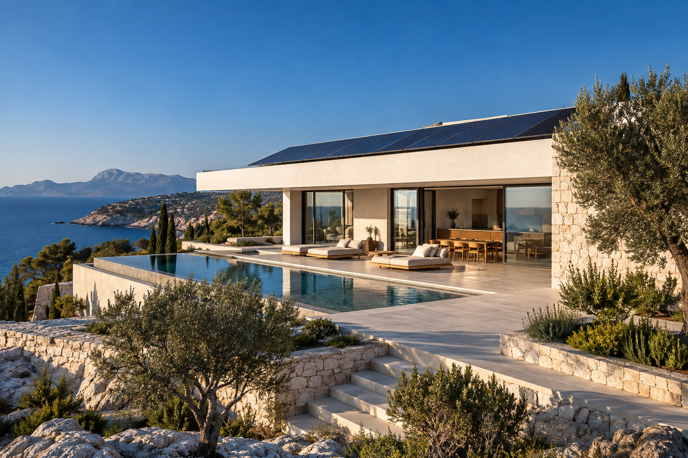
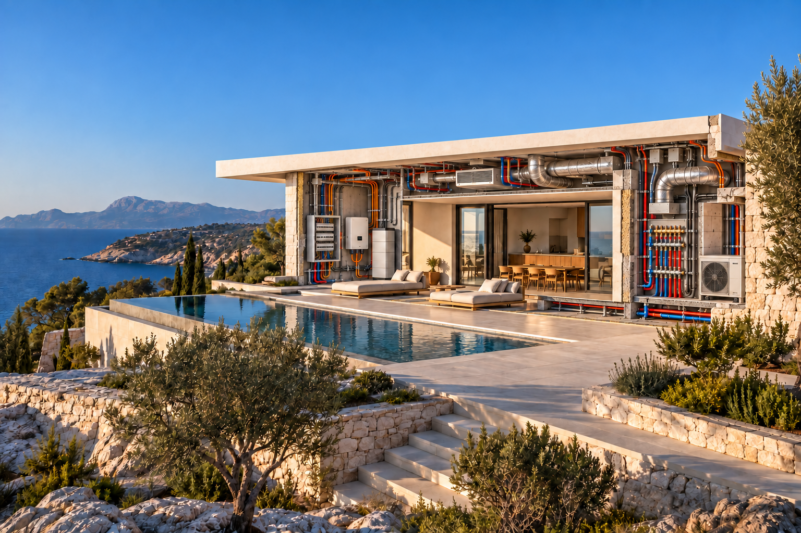
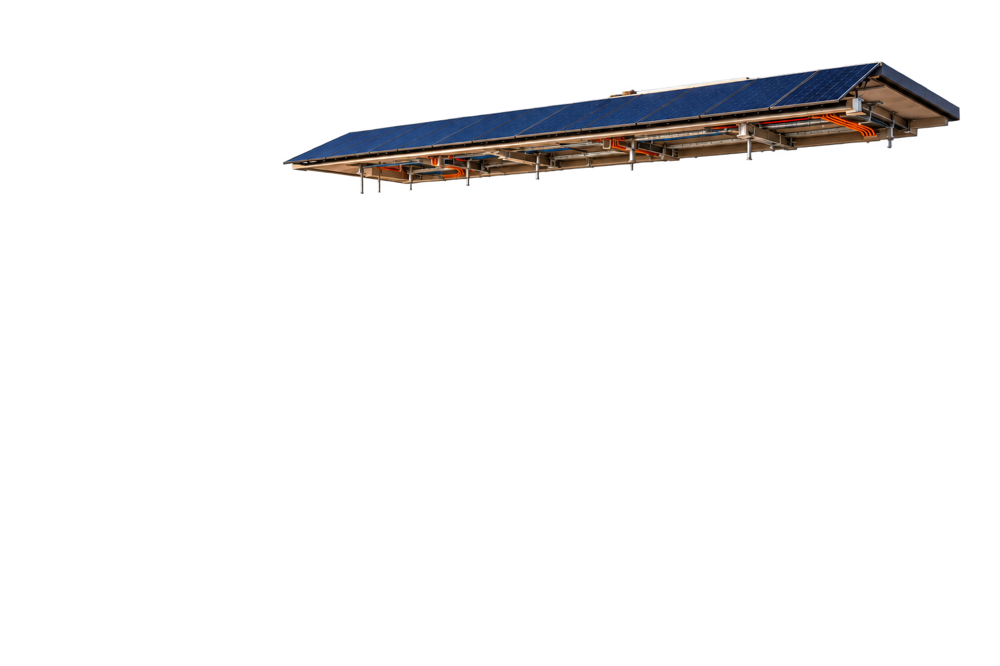

01
Comprendere.
Obiettivi, contesto e vincoli.
Il primo confronto serve a chiarire le tue esigenze e raccogliere i dati utili: consumi, spazi, impianti esistenti e priorità.
Impianti, energia, consulenza.
Ingegneria integrata per dare forma
a ciò che hai in mente.



ENERGIA × ARCHITETTURAProgettare significa
vedere le connessioni.
E dare valore ai dettagli.
Impianti elettrici, comfort ed energia.
Scelte coordinate.
Un progetto coerente.
Impianti elettrici, fotovoltaico, climatizzazione e reti idriche. Progettazione e consulenza per nuove abitazioni e impianti esistenti.
Consulta i servizi per la casaAZIENDE · INSTALLATORI · STUDI TECNICIProgettazione impiantistica, pratiche, direzione lavori e supporto alle forniture. Collaborazioni con aziende e professionisti.
Consulta i servizi per le impreseCompetenze complementari, un approccio integrato. Scegli l’area del tuo progetto.
ESPLORA LE AREE DI INTERVENTOSono Giuseppe Paparo, ingegnere industriale.
Mi occupo di impianti, energia e consulenza tecnica a Catania e Bronte.
Mi occupo di progettazione di impianti elettrici civili e industriali, climatizzazione, sistemi idrici, termoidraulici e fotovoltaici. Affianco privati e imprese anche nella consulenza tecnica, nelle pratiche, negli incentivi e nel Conto Termico, oltre che nella direzione lavori.
Il mio lavoro parte dall’uso concreto dell’edificio e dalle esigenze di chi lo vive o lo gestisce. Definisco con il committente le attività da svolgere e coordino le scelte tecniche con gli altri professionisti e con le imprese coinvolte.
Elettrico, termico e rinnovabili.
Scelte che funzionano meglio insieme.
Dalla raccolta dei dati alla consegna degli elaborati: attività, responsabilità e fasi di lavoro vengono definite nella proposta di incarico.
Il primo confronto serve a chiarire le tue esigenze e raccogliere i dati utili: consumi, spazi, impianti esistenti e priorità.
Le alternative vengono valutate insieme. Il progetto definisce soluzioni, dimensionamenti e documentazione, con attenzione all’integrazione tra i sistemi.
Pratiche, confronto con i fornitori e assistenza alle fasi realizzative, secondo il perimetro dell’incarico concordato.
La consegna raccoglie i documenti previsti nell’incarico. Eventuali aggiornamenti, attività residue e passaggi successivi vengono chiariti con il committente.
Quali informazioni raccogliere e quali documenti preparare per valutare l’intervento.
Bastano poche informazioni ordinate per capire da dove partire. Non è necessario avere già un progetto completo.
Un confronto tecnico parte dalla storia dell’impianto, dalla documentazione disponibile e dalle esigenze attuali.
Prima di scegliere moduli e accumulo, è utile raccogliere le informazioni sui consumi, sull’edificio e sull’impianto elettrico.
Documenti, consulenze e modalità di lavoro: le informazioni utili per il primo confronto.
Condividi la tua opinione sul servizio ricevuto.
Un nuovo impianto, una riqualificazione o una consulenza. Descrivi la tua esigenza: partiamo da qui.
Il modulo prepara sul tuo dispositivo un messaggio con nome, email, eventuale telefono e località, servizio, tipo di intervento e descrizione. Il sito non registra questi dati in un database. Quando apri WhatsApp, il testo viene passato al servizio; invialo solo dopo averlo controllato. Giuseppe Paparo utilizzerà il messaggio ricevuto per gestire la richiesta e ricontattarti. Non inserire dati sensibili o documenti riservati. Per informazioni o richieste sui dati condivisi puoi scrivere a ing.giuseppe.paparo@gmail.com. L’utilizzo di WhatsApp è soggetto alle condizioni e all’informativa del servizio.